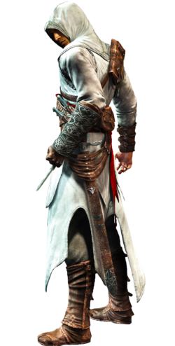

Assassins's Creed: A Festa Histórica da Ubisoft
Os jogos da série passam-se inicialmente em 2012, época em que Desmond Miles, um barman e descendente de uma linhagem da Ordem dos Assassinos, é sequestrado por membros das Indústrias Abstergo - uma fachada para os cavaleiros templários atuais - para descobrir a localização dos Pedaços de Éden, artefatos antigos de grande poder criados por Aqueles Que Nos Precederam. Para isso, Warren Vidic, um empregado da Abstergo, e Lucy Stillman, uma assassina infiltrada, forçam Desmond a usar o Animus, um dispositivo capaz, dentre outras coisas, de criar projeções em três dimensões a partir de memórias de ancestrais contidas no DNA, chamadas na série de memórias genéticas. A partir de tais lembranças, o dispositivo permitia ao paciente revivê-las, conferindo inclusive um controlo parcial sobre as cenas, como se estivessem sendo revividas.
No primeiro jogo da série, Desmond vive a vida do sírio Altair, membro de uma Ordem de Assassinos denominada Hashshashin da época da Terceira Cruzada da Terra Santa; e o seu principal objetivo é eliminar os membros da Ordem dos Templários, responsáveis pela Terceira Cruzada. Para eliminar certas vítimas, a personagem cruza as cidades de Damasco, Jerusalém e Acre, cumprindo o seu dever no meio de uma guerra secreta.É possível misturar-se no meio das pessoas comuns das cidades para se camuflar e, assim, passar despercebido por guardas e outros inimigos - um elemento inédito e que caracterizou a jogabilidade da franquia em títulos futuros. Para a sua época, os gráficos são além do seu tempo, embora a realização de algumas missões acabe se tornando um tanto repetitiva no decorrer do jogo.
Ao conseguirem a informação desejada pela Abstergo, a morte de Desmond é ordenada, mas, ele é salvo por um pequeno grupo de assassinos, compostos por Lucy Stillman, Shaun Hastings e Rebecca Crane. Com isso, Desmond ajuda os Assassinos na corrida pelos Pedaços do Éden usando novas versões do Animus para fazer uso das memórias do nobre italiano Ezio Auditore da Firenze e do guerreiro indígena norte-americano Ratonhnhaké: ton/Connor Kenway, assassinos do Renascimento e da Revolução Americana, respectivamente, para poder descobrir a localização dos outros artefatos. Após o final de Assassin's 3, a série toma um novo rumo, contando a história do galês Edward James Kenway, pirata e corsário que viveu na Época Dourada da Pirataria, pai de Haytham Kenway e avô de Ratonhnhakéton (Connor Kenway). Logo após a história de Edward, a franquia nos mostra a história do assassino que se tornou templário Shay Patrick Cormac, que nasceu na América Britânica, filho de imigrantes irlandeses, e acompanhou a Guerra dos Sete Anos e se tornou um amigo e aliado de Haytham. Um pouco depois conhecemos a história do nobre francês Arno Victor Dorian, que viveu na França durante a Revolução Francesa, como também a história dos irmãos gêmeos Jacob e Evie Frye, ele sendo líder de uma gangue de rua e ela sendo uma pesquisadora de peças antigas, sendo que viveram na Inglaterra vitoriana.
Em 2016, a série foi introduzida nos cinemas onde o enrendo ocorre no século XV, durante a Inquisição Espanhola, o herói dessa vez é Aguilar de Nerha, um ancestral de Callum Lynch, um presidiário que irá passar por pena de morte, e esta nas mãos das Indústrias Abstergo, ele entra no Animus e investiga o passado do seu ancestral. E em 2017 A história decorre no Reino Ptolemaico no Antigo Egito e fala de Bayek, um guerreiro do Antigo Egipto cuja luta para proteger o seu povo o levou a criar a Ordem dos Ocultos (precursores dos Assassinos), com o jogo explorando a origem de seu conflito com a Ordem dos Anciões (precursores dos Templários), servindo como prequela para toda a série.
Figuras históricas estão bastante presentes na série, devido a esta se basear em acontecimentos reais em lugares existentes, essas figuras servem de apoio para Ordem dos Assassinos ou para Ordem dos Templários. O jogo mais recente da série conta a história da Guerra do Peloponeso, que foi travada entre as cidades-estados da Grécia antiga. [3] O jogador assume o papel de uma criança exilada (mercenário(a) quando adulto) chamada Alexios ou Kassandra (dependendo do sexo escolhido para a experiência do jogo, no entanto, o personagem canônico é Kassandra) que luta para defender as pessoas, e é um descendente do rei espartano Leônidas I; e capaz de lutar por Atenas e da Liga de Delos ou Liga do Peloponeso liderada por Esparta.
PASSE O MOUSE SOBRE A IMAGEM E VEJA A DIFERENÇA ENTRE O PRIMEIRO E O ÚLTIMO ASSASSINO
